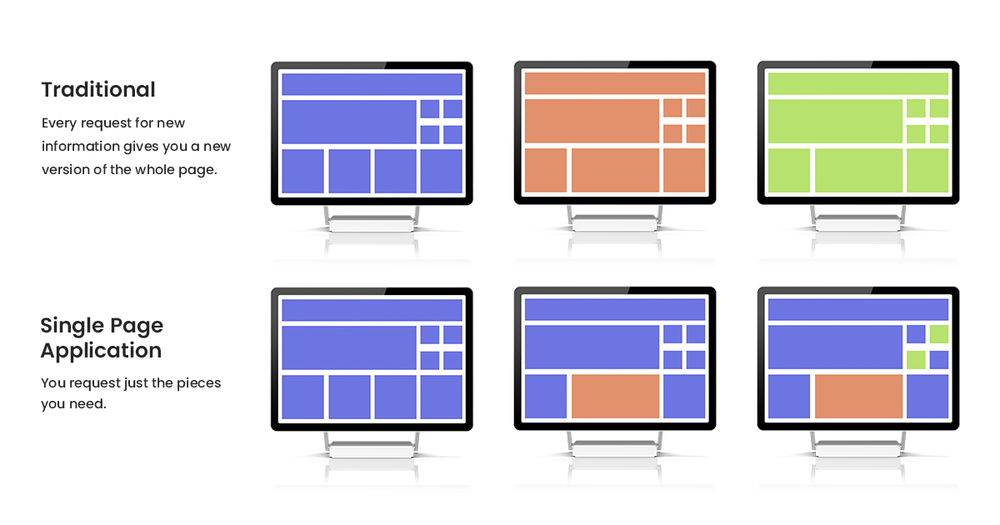

a standardized way to manipulate the browser history via script
history.length
history.back()
history.forward()
history.go(2)
history.go(-2)
history.go(0)
history.go()
MPA vs. SPA
An internal state SPA can only load the app’s entry
A location-based SPA can immediately render the desired content
https://example.com/#/users/
const state = { 'page_id': 1 }
const title = ''
const url = '/next-location'
history.pushState(state, title, url)
const state = { 'page_id': 2 }
const title = ''
const url = '/next-location'
history.replaceState(state, title, url);
Thank You!